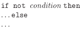
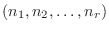
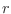

Next: inner product Up: Tensor operations Previous: index
Gather collects the values at index locations indexed by the second
argument. The output tensor has shape
 where
 is the shape of the first argument, and
 is the shape of the second second (index)
argument, and  is the axis along which the gather is performed.
is the axis along which the gather is performed.
If the index is not an integer, the gather will linearly interpolate
between the values on either side. So, for example,
 .
.
If the index value is outside the range of the x-vector along the axis being gathered, then NAN is assigned to that tensor element.